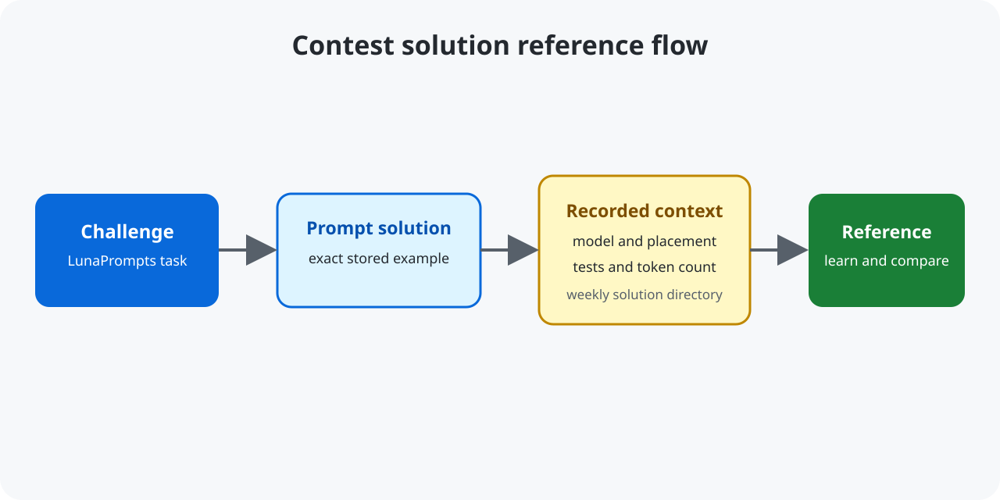

Source repository on GitHub · LunaPrompts challenges
LunaPrompts Contest Solutions
This collection documents LunaPrompts contest solutions for people studying prompt engineering, including the exact prompt, model, test results, placement, and token context where available.

Quickstart
git clone https://github.com/mikaeltorni/luna_prompts_contest_solutions.git
cd luna_prompts_contest_solutions
find 2025_week45 -maxdepth 1 -type f | sortNo package installation is required; the repository is a collection of documentation and prompt examples.
What the collection covers
- Winning and placed solutions from contest weeks 41–45.
- Extraction, moderation, SQL, classification, and orchestration examples.
- Models, test-pass counts, rankings, and token counts for context.
FAQ
Can I copy these prompts into a contest?
Use them as learning references. The README explains the collection's educational purpose and discourages copying solutions into repeated challenges.
Where are the original challenges?
Browse the LunaPrompts challenge index and the links in the repository README.
Where can I find new evaluation challenges?
The related Prompt Challenge Generator creates promptfoo assets from a theme.